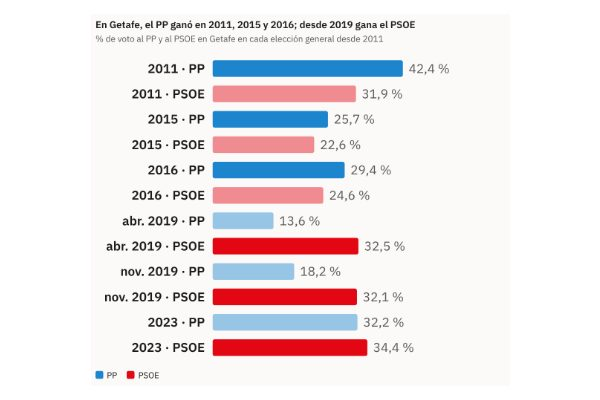

Actualidad · Vox en Gijón · Gijón
Elecciones generales: en Gijón, Vox sacó en 2023 su mejor resultado en Somió, el barrio más rico: 17,0 %
Abascal da un mitin en la ciudad este jueves. Vox bajó en los 18 barrios entre 2019 y 2023; en toda Gijón, del 15,8 % al 12,7 %.
Por Nacho G. del Álamo · · Actualizado el
Cada párrafo lleva una etiqueta: dato (cifra comprobable con las fuentes), patrón (relación que se repite, sin afirmar la causa), hipótesis (explicación posible, sin dos fuentes independientes) o contexto (hechos y declaraciones publicados por otros, enlazados). Cómo verificamos
ContextoSantiago Abascal dio este jueves por la tarde un mitin en la plaza de toros de Gijón, en la campaña de las elecciones generales del 29N, según la agencia Atlas.
DatoEn Gijón, Vox sacó el 12,7 % del voto válido en las generales de 2023, 20.126 votos, frente al 15,8 % de noviembre de 2019. Bajó en los 18 barrios de la ciudad con datos suficientes.
DatoDonde más votó a Vox fue Somió, el barrio con más renta de los 18: el 17,0 % en 2023, después del 24,1 % de 2019. Le siguen Roces Urbano (15,4 %) y Viesques (15,2 %). Donde menos, El Polígono, con el 10,0 %, y Cimavilla, con el 10,8 %.
Ver la tabla
| Barrio | Vox 2019 (%) | Vox 2023 (%) | Renta por unidad de consumo (euros) | Secciones |
|---|---|---|---|---|
| Somió | 24,1 | 17,0 | 43.065 | 4 |
| Roces Urbano | 18,3 | 15,4 | 19.944 | 3 |
| Viesques | 19,7 | 15,2 | 31.834 | 5 |
| Contrueces | 15,4 | 14,3 | 19.049 | 3 |
| El Bibio-Parque | 18,3 | 14,1 | 31.445 | 4 |
| Montevil | 18,2 | 13,5 | 21.929 | 5 |
| El Centro | 18,3 | 12,8 | 27.306 | 27 |
| Perchera-La Braña | 14,9 | 12,3 | 19.998 | 3 |
| L'Arena | 17,1 | 12,3 | 24.152 | 13 |
| Ceares / Ciares | 14,5 | 12,0 | 19.415 | 13 |
| La Calzada | 13,6 | 12,0 | 18.407 | 15 |
| Pumarín | 12,4 | 11,7 | 18.377 | 13 |
| El Coto | 14,1 | 11,6 | 20.956 | 8 |
| Laviada | 14,6 | 11,6 | 23.114 | 11 |
| El Llano | 13,7 | 11,5 | 19.527 | 29 |
| El Natahoyo | 12,4 | 11,3 | 21.125 | 10 |
| Cimavilla | 16,1 | 10,8 | 24.096 | 3 |
| El Polígono | 12,3 | 10,0 | 22.792 | 8 |
PatrónSección a sección se ve lo mismo: en la quinta parte de las secciones con más renta de Gijón, Vox sacó el 14,4 % en 2023; en las otras, entre el 11,8 y el 12,5 %. Es una relación entre secciones: no dice quién vota a Vox dentro de cada una.
ContextoCada barrio tiene su ficha, con el voto de cada sección desde 2004: Somió, El Centro o El Llano, entre otros. El mapa de toda Asturias, en el mapa electoral de Asturias.
Preguntas frecuentes
¿Cuánto votó Gijón a Vox en 2023?
El 12,7 % del voto válido en las generales de julio de 2023, frente al 15,8 % de noviembre de 2019.
¿En qué barrio de Gijón vota más a Vox?
En Somió: el 17,0 % en 2023. Es también el barrio con más renta de la ciudad.
El mapa electoral de Asturias · Vox y los barrios obreros
Método y fuentes
- Qué se compara
- El voto a Vox en las generales de noviembre de 2019 y julio de 2023 en Gijón, por barrio (18 barrios con tres secciones o más) y por sección censal agrupada por renta.
- Límites
- Son datos por barrio y por sección, no por persona: no dicen quién vota a Vox ni por qué. Las secciones que cambiaron de código entre 2019 y 2023 quedan fuera de la comparación por barrio. Sin voto exterior.
- Cómo se calcula
- Voto válido: candidaturas más blanco, como en las fichas de barrio. Barrio: suma de sus secciones (asignación de las fichas, data/barrios/secciones_barrio.csv). Renta: renta media por unidad de consumo del INE, ponderada por población. Quintiles: secciones de Gijón ordenadas por renta en cinco grupos iguales. Script: actualidad/src/resumenes/vox_gijon_barrios.py. Cifras reproducibles con los scripts del expediente de la pieza. Metodología de Actualidad · Metodología del Atlas
- Fuentes
- Autoría
- Nacho G. del Álamo
- Revisión de datos y texto
- Nacho G. del Álamo, 19 de noviembre de 2026
- Publicado · actualizado
- 19 de noviembre de 2026 · 19 de noviembre de 2026, a las 22.50
- Correcciones
- Ninguna.
Serie «Camino al 29N»: 173 piezas
- Si la abstención fuera un partido, en 2023 habría quedado por delante del ganador en más de la mitad de las grandes ciudades y en la mitad de las secciones de España
- Voto por correo para las elecciones generales del 29N: el plazo para pedirlo acaba el jueves 19; en 2023, una de cada tres solicitudes llegó en las dos últimas semanas
- Encuestas y debate: tras el cara a cara de 2023, 10 de 14 encuestadoras ampliaron la ventaja del PP; trece días después ganó por 1,4 puntos
- Elecciones generales: una de cada tres secciones cambió de ganador entre 2019 y 2023
- Elecciones generales: las encuestas dan al PSOE entre el 25,5 y el 33,3 %
- Elecciones generales: Vox baja al 17 % en la encuesta diaria de El País
- Encuestas elecciones generales 2026, hoy 18 de noviembre: el PSOE, a dos puntos o menos del PP
- Encuestas elecciones generales 2026, hoy 19 de noviembre: Sondaxe deja al PSOE a 0,7 puntos del PP
- Debate Sánchez Feijóo: hora, dónde verlo y quién gana el cara a cara
- Elecciones generales: el modelo de encuestas da escaño al Frente Amplio en 5 de sus 17 provincias
- Estás aquíElecciones generales: en Gijón, Vox sacó en 2023 su mejor resultado en Somió, el barrio más rico: 17,0 %
- Encuestas elecciones generales 2026, hoy 20 de noviembre: el PP gana en las cinco, por entre 2,0 y 4,6 puntos
- Veda de encuestas: hasta cuándo se pueden publicar las del 29N
- Cómo votar en las elecciones generales del 29N: horario, qué llevar y cómo saber tu colegio
- A qué hora se sabrán los resultados de las elecciones generales del 29N
- Encuestas elecciones generales 2026, hoy 23 de noviembre: PP y Vox suman mayoría absoluta en las siete
- Programa electoral de PP, PSOE, Vox y Frente Amplio: qué propone cada uno el 29N
- Getafe-Atlético: en la ciudad del Coliseum, el PSOE pasó de ganar en 112 de las 122 secciones a ganar en 74, y el PP se quedó a 2.182 votos
- El derbi sevillano se juega en barrios del PP: en Nervión, el del Sánchez-Pizjuán, ganó en 37 de 41 secciones; en la ciudad, el PSOE fue primero en 286 de 521
- A una semana del 29N, la mediana de las encuestas da al PP 3,4 puntos de ventaja, 1,2 menos que hace siete días; el lunes 23 es el último día para publicarlas
- Ver las 173 piezas de la serie
Más datos: elecciones generales del 29N de 2026: fecha y escaños por provincia · resultados de las elecciones generales 2026 (29N) y los de 2023 · dónde y cómo votar el 29N: colegio electoral, voto por correo y plazos.
Sigue leyendo
 Encuestas de hoyEncuestas elecciones generales 2026, hoy 23 de noviembre: PP y Vox suman mayoría absoluta en las siete
Encuestas de hoyEncuestas elecciones generales 2026, hoy 23 de noviembre: PP y Vox suman mayoría absoluta en las siete Crónica de la semanaA una semana del 29N, la mediana de las encuestas da al PP 3,4 puntos de ventaja, 1,2 menos que hace siete días; el lunes 23 es el último día para publicarlas
Crónica de la semanaA una semana del 29N, la mediana de las encuestas da al PP 3,4 puntos de ventaja, 1,2 menos que hace siete días; el lunes 23 es el último día para publicarlas
Getafe-AtléticoGetafe-Atlético: en la ciudad del Coliseum, el PSOE pasó de ganar en 112 de las 122 secciones a ganar en 74, y el PP se quedó a 2.182 votos Sevilla-BetisEl derbi sevillano se juega en barrios del PP: en Nervión, el del Sánchez-Pizjuán, ganó en 37 de 41 secciones; en la ciudad, el PSOE fue primero en 286 de 521
Sevilla-BetisEl derbi sevillano se juega en barrios del PP: en Nervión, el del Sánchez-Pizjuán, ganó en 37 de 41 secciones; en la ciudad, el PSOE fue primero en 286 de 521 A qué hora los resultadosA qué hora se sabrán los resultados de las elecciones generales del 29N
A qué hora los resultadosA qué hora se sabrán los resultados de las elecciones generales del 29N Cómo votarCómo votar en las elecciones generales del 29N: horario, qué llevar y cómo saber tu colegio
Cómo votarCómo votar en las elecciones generales del 29N: horario, qué llevar y cómo saber tu colegio